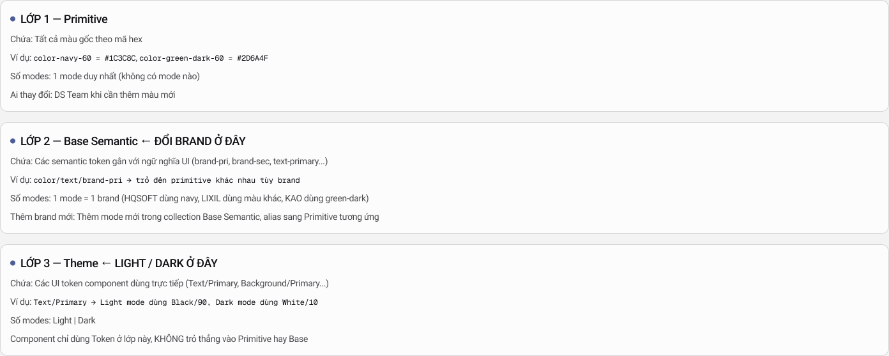
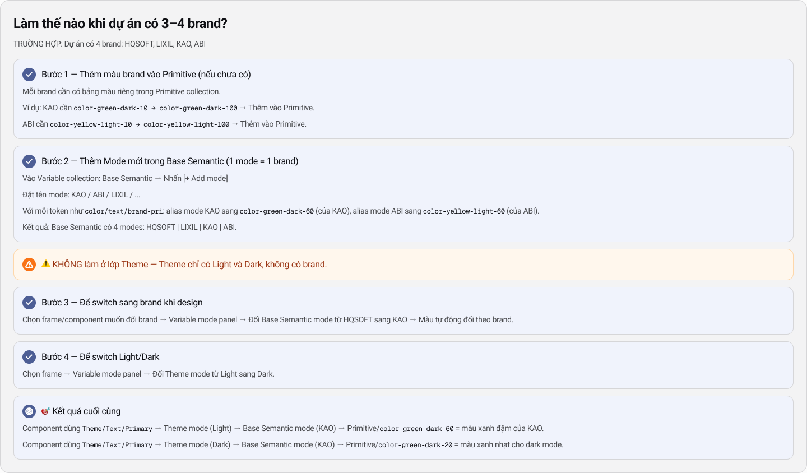

Hai trục song song
Token 3 lớp xử lý màu sắc, spacing, typography — phần “da” (skin).
Component Skeleton + Socket xử lý cấu trúc, icon, số lượng tab — phần “xương” (skeleton).

HQSOFT vận hành nhiều sản phẩm enterprise cho nhiều khách hàng cùng lúc — mỗi brand có palette và icon riêng, nhưng luồng nghiệp vụ gần như giống nhau. Kiến trúc này trả lời: design once, brand many.
Một bộ component gốc (Parent) + nhiều lớp theme (Child) — switch brand trong Figma chỉ bằng đổi Variable mode, không detach, không sửa hex.
| Cách làm cũ | Hậu quả |
|---|---|
| Clone file Figma cho từng brand | Bug fix phải sửa N file; drift nhanh |
Hardcode màu #007bff trong component |
Đổi brand = sửa từng layer |
| Tạo component mới cho mỗi khách | Thư viện phình, mất consistency |
| Detach instance để custom | Mất link với DS gốc, không scale |
Token 3 lớp xử lý màu sắc, spacing, typography — phần “da” (skin).
Component Skeleton + Socket xử lý cấu trúc, icon, số lượng tab — phần “xương” (skeleton).
Parent DS giữ component gốc + API variants, không gắn cứng brand.
Child DS override token và plug icon library riêng — component Parent không đổi cấu trúc.
Đây là phần quan trọng nhất để switch brand trong Figma. Ba collection tách biệt — mỗi lớp một nhiệm vụ. Component chỉ bind token lớp Theme.

| Lớp | Chứa | Mode | Ai sửa |
|---|---|---|---|
| Lớp 1 — Primitive | Màu gốc theo hex: color-navy-60, color-green-dark-60… |
1 mode duy nhất | DS Team |
| Lớp 2 — Base Semantic | Semantic UI: brand-pri, text-primary… |
1 mode = 1 brand ← đổi brand ở đây | DS Team + designer set mode |
| Lớp 3 — Theme | UI token component dùng: Text/Primary, Background/Primary… |
Light | Dark | Component bind lớp này |
Component dùng Theme/Text/Primary
Fill/text trong component luôn trỏ Theme token — không Primitive, không Base Semantic.
Theme mode: Light
Chọn nền sáng hoặc tối — độc lập với brand.
Base Semantic mode: KAO
Alias color/text/brand-pri → color-green-dark-60 (xanh đậm KAO).
Primitive: color-green-dark-60 = #2D6A4F
Giá trị hex cuối cùng — chỉ tồn tại ở collection Primitive.
Tất cả component chỉ dùng Theme tokens — KHÔNG trỏ trực tiếp vào Primitive hay Base Semantic.
Khi thêm sub-brand mới: chỉ cần thêm mode trong Base Semantic — Theme và component không cần đổi.
Theme chỉ có Light và Dark — không có brand. Đây là lỗi phổ biến nhất của fresher/junior.
Token xử lý màu. Multi-brand còn cần xử lý icon library khác nhau và số tab khác nhau — đây là vai trò của Skeleton + Socket, minh họa qua Navigation Bar.
NavigationBar-HQ/Base-semantic là bản vẽ kỹ thuật: vị trí icon + label cố định, ổ cắm (socket) trống chờ icon, màu qua Theme token.
Variant: số tab (4 / 5 / 6), trạng thái active/inactive.
NavigationBar-Children/ThemeA: 4 tab, icon line bo tròn, palette Brand A.
NavigationBar-Children/ThemeB: 6 tab, icon solid góc vuông, palette Brand B.
Ổ cắm đa năng trên khung HQ
Vị trí icon là placeholder — không có hình dạng cụ thể, chỉ là slot chờ được lấp đầy.
Brand plug icon library riêng
Brand A đưa icon từ thư viện riêng vào socket (Instance swap). HQ không cần biết icon đến từ đâu.
Màu đổi qua Base Semantic mode
Thanh nav xanh ngọc (A) hay đỏ tươi (B) — cùng skeleton, khác token mode.
| Thuộc tính | Brand A (ThemeA) | Brand B (ThemeB) |
|---|---|---|
| Màu thanh | Xanh ngọc (palette A) | Đỏ tươi (palette B) |
| Số tab | 4 | 6 |
| Icon | Line, bo tròn | Solid, góc vuông |
| Nguồn gốc | Cùng HQNavigationBar — HQ cập nhật skeleton → cả hai brand nhận fix |
|
| Mức độ khác biệt | Giải pháp | Ví dụ |
|---|---|---|
| Chỉ khác màu | Base Semantic mode | KAO xanh, ABI vàng |
| Khác Light/Dark | Theme mode | Cùng brand, nền tối |
| Khác icon style | Socket + Instance swap | Line vs solid icon |
| Khác số tab / layout nhỏ | Variant property | NavBar 4 tab vs 6 tab |
| Khác cấu trúc lớn | Extend / Child variant | Thêm slot badge trên NavBar |
| Hoàn toàn khác UX | Component Child riêng (hiếm) | Sidebar thay bottom bar |
Nguyên tắc 80/20: 80% custom multi-brand chỉ cần đổi Base Semantic mode + swap icon.
Trường hợp: Dự án có 4 brand — HQSOFT · LIXIL · KAO · ABI.

Bước 1 — Thêm palette vào Primitive
KAO: color-green-dark-10…100. ABI: color-yellow-light-10…100. Chỉ DS Team thêm palette mới.
Bước 2 — Add mode trong Base Semantic
Variables → Base Semantic → [+ Add mode] → đặt tên KAO / ABI. Alias color/text/brand-pri sang primitive tương ứng mỗi mode.
Bước 3 — Switch brand khi design
Chọn frame → Variable modes → đổi Base Semantic: HQSOFT → KAO. Màu tự đổi — không detach.
Bước 4 — Switch Light / Dark
Đổi Theme mode: Light → Dark. Độc lập với brand.
| Level | Cần nắm | Bài tập |
|---|---|---|
| Fresher | 3 lớp token; brand ở Base Semantic; không detach | Switch HQSOFT ↔ KAO trên 1 Button; chụp before/after |
| Junior | Socket + instance swap; variant vs Child component | 2 NavBar branded từ 1 component gốc; verify màu đồng bộ frame |
| Middle | Onboard brand mới; audit token compliance | Thêm Brand X; matrix 4 brand × 2 theme = 8 combination |
| ❌ Sai | ✅ Đúng |
|---|---|
Tạo Button-KAO, Button-ABI riêng |
1 Button + switch Base Semantic mode |
| Thêm brand mode vào collection Theme | Brand ở Base Semantic; Theme chỉ Light/Dark |
| Detach NavBar để đổi màu nhanh | Đổi Variable mode trên instance |
| Hardcode icon trong component gốc | Socket + instance swap theo brand |
| Clone cả file Figma per client | 1 file Parent + mode per brand |
icon prop / slot.Text/Primary ↔ --color-text-primary.Tóm tắt một câu
Parent DS giữ xương + API; Base Semantic giữ brand; Theme giữ light/dark; Socket giữ icon. Đổi khách hàng = đổi mode + plug icon — không vẽ lại từ đầu.